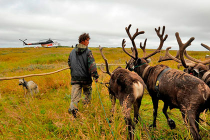
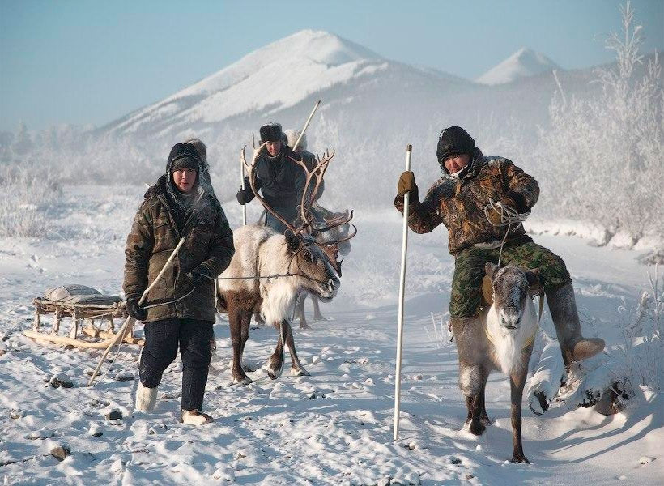

Оленеводы Крайнего севера, Сибири и Дальнего Востока поедут на Всемирный конгресс оленеводов, который с 16 по 20 августа пройдет в селе Йокмосс на севере Швеции. Об этом сообщает ТАСС со ссылкой на координаторов российских участников.
По их словам, во Всемирном конгрессе примут участие представители регионов России, где распространено традиционное оленеводство. Будут жители Амурской, Иркутской и Мурманской областей, Ямало-Ненецкого и Ханты-Мансийского автономных округов, Хабаровского края, Бурятии, Якутии, Тувы и Красноярского края. «В общей сложности российская делегация будет около 80 человек», — сказали координаторы.
Во время работы конгресса от российской стороны запланировано несколько выступлений с докладами. Как сообщили в правительстве ЯНАО, директор департамента агропромышленного комплекса, торговли и продовольствия региона Виктор Югай выступит с информацией об особенностях оленеводства на Ямале, переработке мяса северных оленей и мерах безопасности, принятых после вспышки сибирской язвы 2016 года. «Также запланированы выезды на природу — в национальный парк Швеции, участие российских оленеводов в Чемпионате по метанию аркана, выставке прикладного искусства и детских рисунков», — сказали координаторы.
Таймыр, самый северный район Красноярского края, представит Артем Яр, потомственный оленевод из носковской тундры. Он расскажет участникам конгресса о своем опыте ведения домашнего оленеводства, а также расскажет о своих подходах в решении задач, стоящих перед отраслью.
«Со своей семьей я кочую по носковской тундре уже более 10 лет. Когда только начинал заниматься оленеводством, в моем стаде было всего 60 голов. Сейчас оно выросло до 300. У нас большой опыт в этом деле, поэтому обо всех удачах и неудачах, проблемах и достижениях знаем, что называется, не понаслышке. Я буду рад поделиться своими знаниями с участниками конгресса и узнать об опыте других регионов и стран», — сказал Яр.
Всемирный конгресс оленеводов проводится один раз в четыре года. Предыдущий проходил в 2013 году в Китае.
Российские оленеводы из Арктики и Сибири поедут на Всемирный конгресс в Швецию
Российские оленеводы из Арктики и Сибири поедут на Всемирный конгресс в Швецию
Таймыр, самый северный район Красноярского края, представит Артем Яр, потомственный оленевод из носковской тундры. Он расскажет участникам конгресса о своем опыте ведения домашнего оленеводства, а также расскажет о своих подходах в решении задач, стоящих перед отраслью.
«Со своей семьей я кочую по носковской тундре уже более 10 лет. Когда только начинал заниматься оленеводством, в моем стаде было всего 60 голов. Сейчас оно выросло до 300. У нас большой опыт в этом деле, поэтому обо всех удачах и неудачах, проблемах и достижениях знаем, что называется, не понаслышке. Я буду рад поделиться своими знаниями с участниками конгресса и узнать об опыте других регионов и стран», — сказал Яр.
Всемирный конгресс оленеводов проводится один раз в четыре года. Предыдущий проходил в 2013 году в Китае.